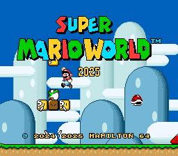

Convertidor
Aplica parches BPS localmente en navegador. No sube ROMs ni genera archivos en servidor.
AbrirCada modulo tiene su propia direccion web para que puedas compartir solo lo que corresponde: convertidor, panel, sincronizacion, node/MCP o manifest.
powershell -ExecutionPolicy Bypass -File .\Sync-RetroArchWiiMedia.ps1 -WiiRoot D:\ -InstallMissingEmulators -CreateCatalog -CreatePlaylists -SyncThumbnails
Version web: cargando
Canal: cargando
Repo: djklmr2025/arkaios-retro-launcher-wii
El sistema descarga homebrew, emuladores y metadatos permitidos. No descarga ROMs comerciales ni automatiza exploits.
| Sistema | Motor | Ruta |
|---|
Este panel sirve como punto estable para publicar manifest, versiones, checksums, paquetes homebrew compatibles y reglas de sincronizacion de saves.
Aplica el parche a tu copia personal desde el navegador. La ROM base y el archivo generado nunca salen de tu equipo.

Hack distribuido como parche BPS. Descarga el parche oficial, selecciona tu ROM base limpia y genera el resultado localmente.
El constructor valida tamano y CRC32 de la ROM base antes de generar el archivo final. Si la copia no coincide, se detiene.
No se incluye ni se hospeda la ROM comercial. Usa solamente una copia que puedas usar legalmente.
powershell -ExecutionPolicy Bypass -File .\Sync-RetroArchWiiMedia.ps1 -WiiRoot D:\ -InstallMissingEmulators -CreateCatalog -CreatePlaylists -SyncThumbnails
Mirror local:
C:\ARKAIOS\arkaios-wii-sync
Copia archivos nuevos o mas recientes entre la USB y el mirror local.
npm run node-server
powershell -ExecutionPolicy Bypass -File .\Register-ArkaiosWiiNode.ps1 -WiiRoot D:\ -Heartbeat powershell -ExecutionPolicy Bypass -File .\Register-ArkaiosWiiNode.ps1 -WiiRoot D:\ -UploadCatalog
npm run mcp-server
Expone health, manifest, nodos y subida de catalogo a clientes MCP compatibles.
Importar_Mis_Roms.bat
Cataloga archivos locales del usuario como metadata; no descarga ni comparte ROMs.
Archivo publico para versiones, rutas, capacidades y politicas del sistema.
Abrir JSONSe permite homebrew, metadata, covers y parches. No se enlazan ni distribuyen ROMs comerciales.
/health /api/wii/heartbeat /api/wii/catalog /api/wii/nodes /api/wii/manifest